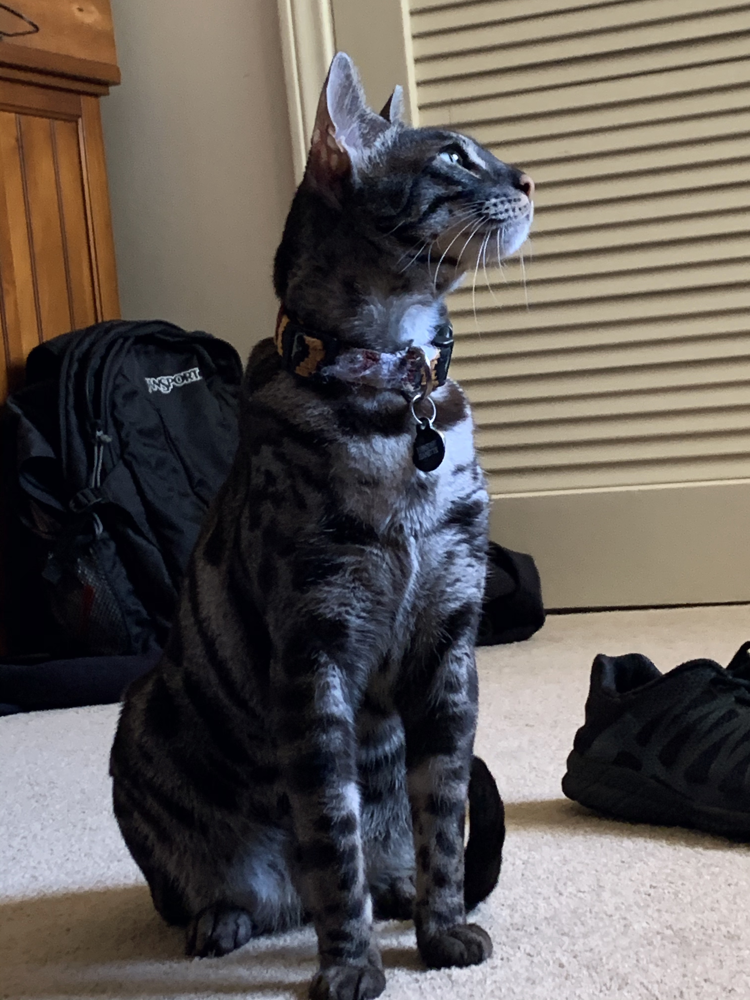
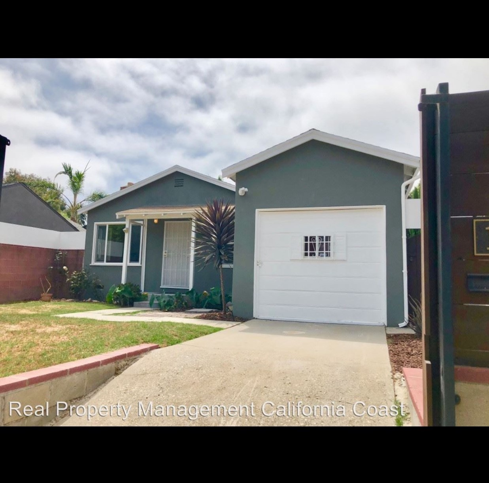
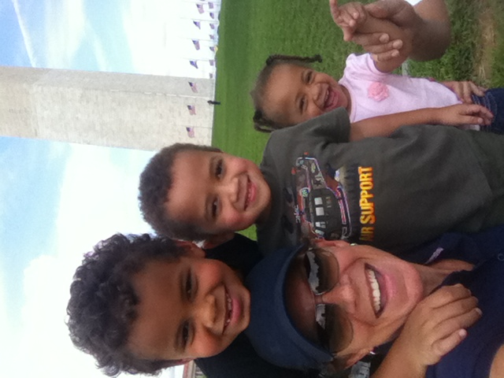

| Picture 1 | Picture 2 | Picture 3 |
|---|---|---|
|  |  |  |
| This is my cat, Meeko. We adopted her in June of 2016, and have had her, along with our dog since we lived in Los Angeles | This is my childhood home in Venice, California, in Los Angeles County. | Pictured here are myself, my mother, and my two siblings outside the Washington Monument in the District of Columbia. |